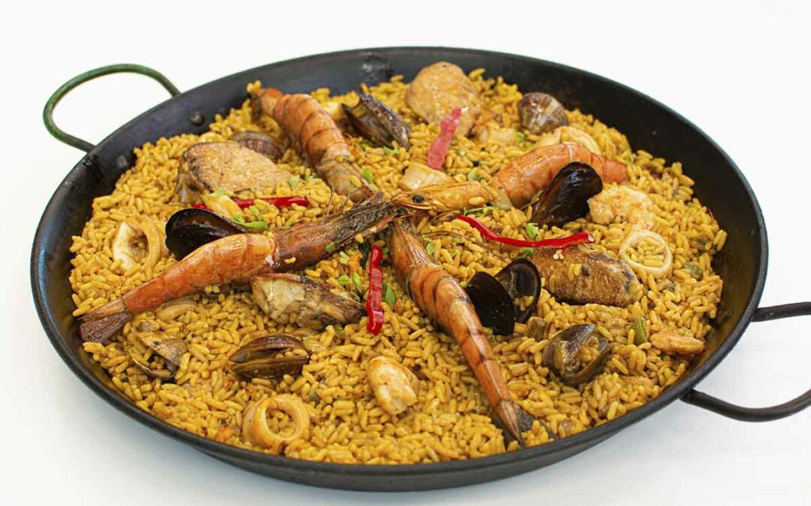

Paella

Description
Paella is perhaps the most famous dish in Spanish cuisine. Although there are many varieties of paella, here we are going to look at one of the tastiest: seafood paella.
There are those who claim that the real paella is with rabbit and vegetables, and that rice with seafood should not be called paella. Ignore them. They are the same kind of people who claim that the zombies in Resident Evil are not zombies, but infected.
Ingredients
- 400 g of Bomba variety rice
- 12 prawns
- 12 clams
- 12 mussels
- 1.5 L of fish broth
- A clove of garlic
- 2 tomatoes
- half a red pepper
- half a green pepper
- 200 g of fresh squid rings
- 50 mL of white wine
- Saffron or sweet paprika
- Extra virgin olive oil
- Salt
- A paellera: a big special pan to make paellas. If you do not have one, you can use just a big pan.
Steps
- You can make the broth with a few prawns, hake, monkfish… onion, bay leaves, salt. Then blend and strain everything, keep it warm. Peel and chop the onion and garlic, wash and dice the peppers, grate the tomatoes and clean the clams and mussels.
- Heat the paellera with a good splash of olive oil. When it is hot, add the prawns with a little salt, stir a couple of times and remove. Keep warm.
- Next, add the well-cleaned mussels, the wine, a pinch of salt and cover. Remove the mussels when they have opened. Next, add the garlic to the paella pan, and a couple of minutes later the peppers. Sauté until they begin to become tender, then add the squid rings, fry for a few minutes and sprinkle with crushed tomatoes, season to taste.
- When some of the tomato water has been absorbed, add the rice and toast it for a few minutes, stirring occasionally. Then add the clams, broth and saffron threads (and paprika or food coloring if desired).
- Let it cook for about 8-10 minutes, before the broth has completely evaporated, remove from the heat, add the mussels and cover, let it rest for a few minutes so that the grain is cooked to perfection after having finished absorbing the broth.
- Serve the paella accompanied by the prawns and enjoy a dish with lots of aroma, flavour and colour.
- After this, think carefully about whether, after your retirement, you would not like to go and live on the Spanish coast, like the Germans do.